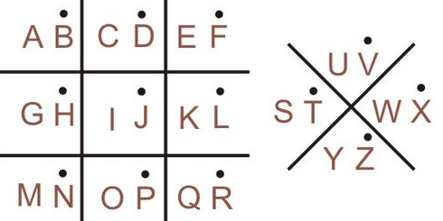

◀
SANDI KOTAK 1
Materi
Alat Terjemah
Kuis Game
Rumus:

Kamus Visual Sandi Kotak 1 (A-Z)
Alat Terjemah Sandi Kotak 1
1. TEKS ➔ SANDI KOTAK 1
Pratinjau visual muncul di sini...
2. SANDI KOTAK 1 ➔ TEKS
Ketuk simbol di bawah
Output
Spasi
Hapus Semua
Level: Huruf
Level: Kata
Skor:
0
Soal:
1
/10
Tebak huruf/kata dari simbol berikut:
Ulangi Game